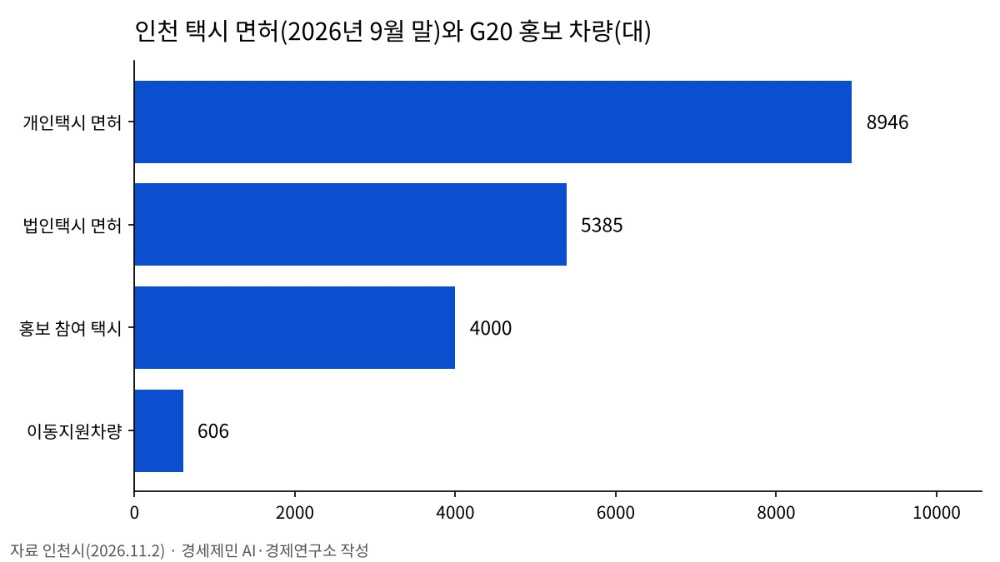

인천 택시 4606대, 2028 G20 정상회의 유치 홍보 나선다
개인·법인택시 4000대 홍보 스티커
장애인콜택시 등 606대도 참여
인천·부산·제주 등 5곳 유치 경쟁
AI경제저널=김갑봉 기자 | 인천시(시장 박찬대)가 11월부터 택시와 교통약자 이동지원차량 4606대에 2028 G20 정상회의 유치 홍보 스티커를 붙여 운행한다. 개인·법인택시 4000대와 장애인콜택시 등 이동지원차량 606대다.
인천시는 G20 정상회의 유치 분위기를 높이려고 이같이 추진한다고 2일 밝혔다. 스티커 문구는 「2028 G20 정상회의, 이제는 인천!」이다.
11월부터 4606대 스티커 부착
홍보 차량은 개인·법인택시 4000대와 교통약자 이동지원차량 606대를 합친 4606대다. 이동지원차량은 특장차 276대와 바우처택시 330대다. 인천시는 택시 운수종사자를 대상으로 유치 기원 서명운동도 함께 벌인다.
법인은 일괄 부착, 개인은 자율 참여
스티커는 인천 개인·법인택시조합을 거쳐 나눠 준다. 법인택시는 조합이 회사별 보유 차량 수에 맞춰 나누고, 회사가 한꺼번에 붙인다.
개인택시는 조합 사무실과 조합이 운영하는 충전소 3곳에 스티커를 둔다. 운전자가 직접 받아 붙이는 자율 참여 방식이다.
택시 면허 1만4331대 가운데 27.9%
9월 말 인천 택시 면허는 1만4331대다. 개인택시가 8946대, 법인택시가 5385대다. 이번에 스티커를 붙이는 택시 4000대는 전체 면허의 27.9%다.
박성순 인천시 교통정책국장은 택시와 이동지원차량이 시민과 방문객에게 인천의 얼굴이 되는 만큼 이번 홍보가 시민의 관심과 공감대를 높이길 기대한다고 밝혔다.

인천·부산·제주·경북·전남광주 경쟁
G20 정상회의는 2028년 11월 한국에서 열린다. 인천과 부산, 제주, 경북, 전남·광주가 유치전에 나섰다.
제주는 경호에 유리한 섬, 부산은 정상급 회의 개최 경험을 내세운다. 경북은 2025년 APEC 정상회의 개최를, 전남·광주는 지역균형발전을 앞세운다.
인천은 인천국제공항과 송도·청라·영종 경제자유구역, 국제회의 시설을 강점으로 든다. 인천은 2010년 G20 정상회의 유치전에서 서울에 밀렸다.
정상회의 기간 1만5000명 방문 예상
개최 도시에서는 본회의와 함께 100일 넘게 장관급·실무회의가 열린다. 정상과 대표단, 취재진 등 약 1만5000명이 찾을 것으로 예상된다고 경향신문이 보도했다.
개최 도시는 정부 공모를 거쳐 외교부 개최도시선정위원회가 정할 전망이다.
인천시는 9월 27일부터 10월 1일까지 송도컨벤시아 세계한상대회에서 유치 서명운동을 벌였다. 지난 1일에는 대한항공 점보스 배구단과 함께하는 유치 공동 응원을 알렸다.
참고문헌
- 인천시, 「"2028 G20 정상회의, 이제는 인천!"… 인천 택시 '달리는 홍보대사' 나선다」, 2026.11.2. https://www.incheon.go.kr/IC010205/view?repSeq=DOM_0000000015871496
- 인천시, 「인천시, 대한항공 점보스 배구팀과 2028 G20 정상회의 인천 유치 공동 응원」, 2026.11.1. https://www.incheon.go.kr/IC010205/view?repSeq=DOM_0000000015868743
[사진 출처]
- [사진1] 인천광역시, 「“2028 G20 정상회의, 이제는 인천!”… 인천 택시 ‘달리는 홍보대사’ 나선다」 보도자료 첨부 사진(부착 예시), 2026.11.2., 공공누리 출처표시, https://www.incheon.go.kr/IC010205/view?repSeq=DOM_0000000015871496
관련기사
- 10월 수출 1152억 달러…인천 9월 수출은 반도체 빼면 8.3% 감소
- 인천신용보증재단, 소상공인 495억원 협약보증 2일부터 접수
- 인천시·필라델피아, 바이오·교육·문화 교류 확대 논의
- 인천시, 강화·옹진 섬 식수 공급 개선 토론회 열어
저작권자 © AI경제저널 무단전재 및 재배포, AI학습 및 활용 금지